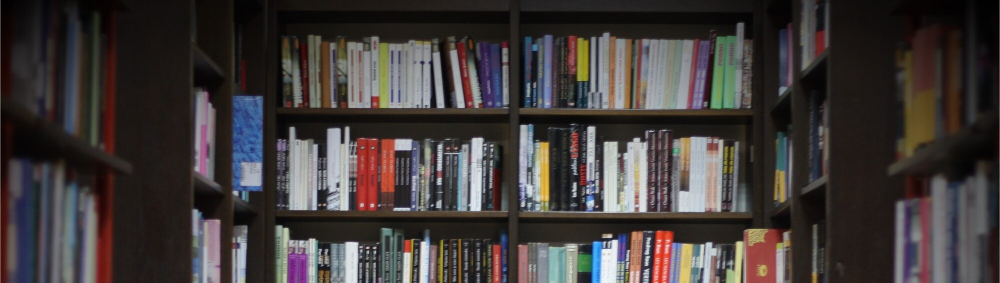

Perkenalkan, saya Arif Ardiansyah, dan ini adalah website perpustakaan saya. Website ini dibuat untuk memenuhi tugas mata kuliah Pengembangan Web Perpustakaan, lihat halaman lainnya untuk mengetahui lebih banyak tentang konten yang ada.